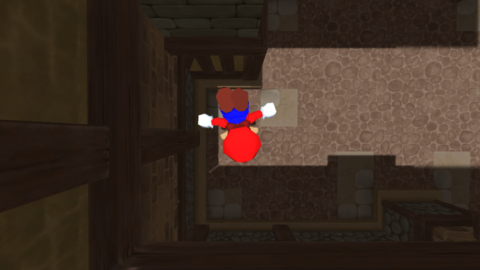
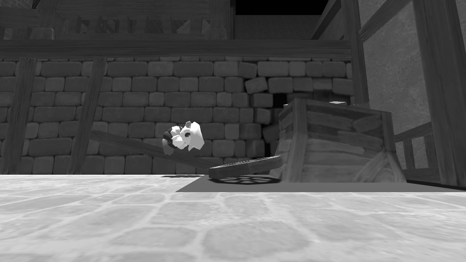
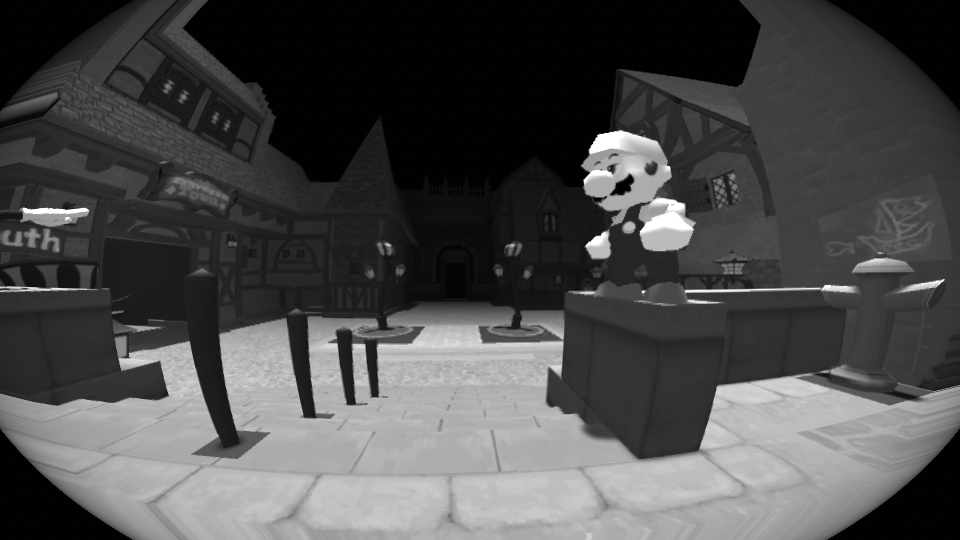
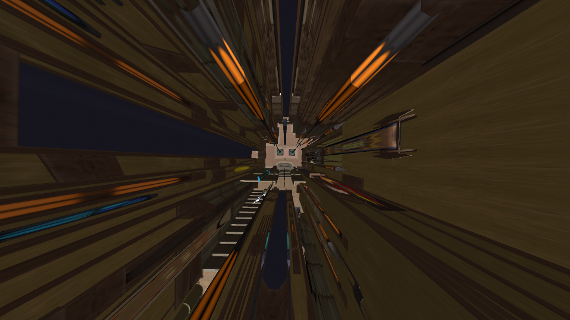
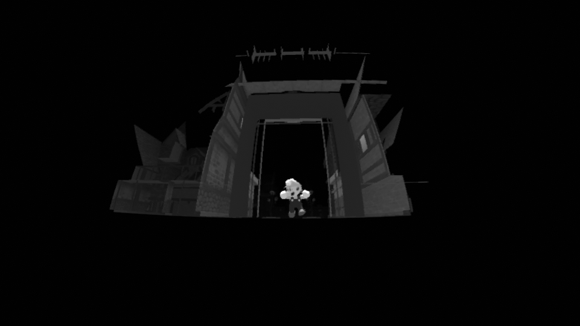

I had originally written the following for the newsletter of my local photography club, however I never went through with submitting it. As such, it was written for an audience who might have miore experience with cameras than game controllers. It's been a little while, but I was having some thoughts about how much I enjoyed this project during it's creation that I wanted to share more of the process behind it with the world.
(Photo) Games People Play Make!
by Jonathan West
It’s been a little while since I’ve written anything for the PEEPsheet. Life, as it does, has a habit of forcing you to prioritize and reprioritize your day to day. My wife and I welcomed a son into our family last September, and as such, I’ve had to take some time away from work and other activities to prioritize caring for my family and my home while we adjust.
In the sparse downtime I did find during parental leave, however, something really interesting happened. When I’m not out and about taking photos, I’m often at a keyboard, making little video games to share online. I had been experimenting with this idea recently of a platformer game (think of some of the newer 3D Super Mario games) for 2 players. One thing led to another, and after several iterations I had a prototype for my own very first photography video game.



The 2-player aspect of this was a lot of fun from the beginning. Player 1 used a controller to play as Mario, essentially acting as a model, while Player 2 used a keyboard and mouse to play the role of a photographer. Coordination and communication between players becomes key, not unlike when photographing a model out on location, and it was fascinating to see how many unique moment-to-moment shots the photographer could capture of the model simply traversing the level the two have been placed in.
What became the most fascinating thing for me in the process of making this, however, was the realization of what “video game photography” could really evolve into. Despite the alien and fantastical settings of most of the photography video games I’ve covered in past articles, their mechanics were still grounded in some sense of reality. Some of the more immersive photography games do their best to mimic the capabilities of a real-life camera, often to great effect. Cameras are complicated, and programming them to accurately simulate the capture of light is more difficult than I could possibly imagine.
What if, however, game developers approached photography from the perspective of capturing pixels rather than light?
That might sound redundant - everything on your computer monitor is, after all, made of pixels. A video game that involves taking pictures is, naturally, capturing pixels on your screen. But what I want to suggest is that perhaps games could be designed with cameras that are more aware of this fact.
For example, as I began programming my camera, I wanted to see if I could replicate a fisheye lens effect. There are many built-in game engine tools that allow me to do this: a lens warping effect paired with vignette and a change in a field of view (FOV) property, in this case. The FOV in particular can also be a handy property when you want to replicate camera “zoom”. The real fun comes in though, when you realize just how much a video game will let you adjust that FOV. In my game, I set no limits on it, and allowed the player to adjust the FOV/Camera zoom as much as the game engine would let them. The result is a captured image you couldn’t really get in any place other than a video game.

Another important decision I made involved collision. When games are programmed, especially platformers like Super Mario, the game has to know what to do when objects collide with each other. Mario has to be programmed to stand on solid ground when he touches it, otherwise he would fall right through. What if our camera, however, deliberately ignored such programming, and just simply flew through the game world as is, fully exposing the unintentional beauty of the game world to the photographer as they explore it.

Computer games rely on rules and logic, strictly implemented by a developer to make sure it all holds together as tightly as possible. Cameras, too, are carefully and deliberately crafted to ensure they do their job well as capturers of light. However, some of the most playful and experimental photographers in history discovered brand new techniques by seeing how far they could push the limits of a camera’s mechanisms and of light itself. Light painting, vaseline on the lens, even double exposure photography were unintentional affordances of cameras that pushed new boundaries of what an image could be. Why can’t game developers follow the same approach in their experimentation with video game cameras? Where is the digital vaseline for my screen?
I’ll end this with one last key example. A friend of mine, Jonny Hopkins, released a tool last year called Open World Shutter. It’s a piece of software that acts like a camera with an adjustable shutter speed, capturing dozens of images on your computer screen over the time frame that you specify. It then generates a new image by taking the average, max, and minimum color values it detects in each of these images, and creates a new one from them. The result is something that feels other worldly, and impossible to replicate anywhere else.
The game Ape Out, captured with Open World Shutter.
There’s entire universes within our computers, and perhaps our tools to capture them would be better off if they embraced the digital contexts we use them in, rather than try to replicate the ones we use in the real world.